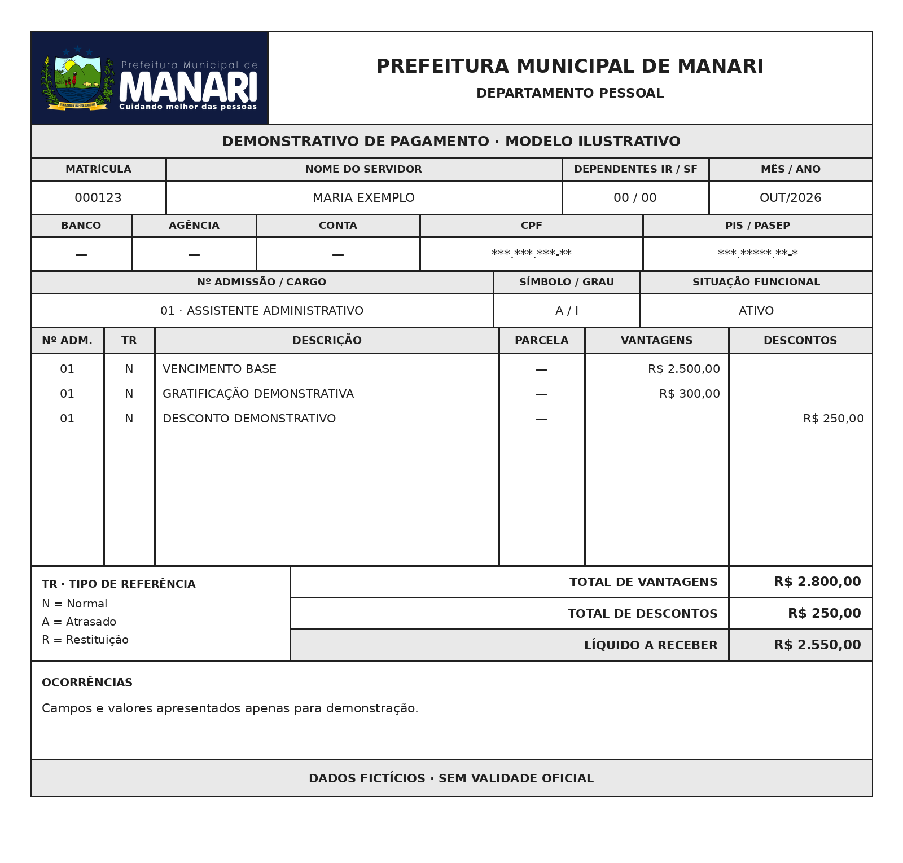

Seu contracheque.
Na palma da mão.
Consulte seus comprovantes, baixe em PDF e imprima quando precisar. Tudo em um só lugar.
Acesse sua conta
Use o mesmo e-mail e senha do e-SIC e da Ouvidoria.
Esqueci minha senhaComece por aqui
- 1Confirme seu cadastro com o RH
O RH vincula sua matrícula ao seu e-mail pessoal.
- 2Crie e confirme sua conta
Use o e-mail cadastrado pelo RH e confirme a mensagem recebida.
- 3Acesse seus documentos
Entre, escolha a competência e abra ou baixe o PDF.
Criar minha conta
Não recebi o e-mail de confirmação
Meus contracheques
Seu e-mail ainda não está vinculado a uma matrícula ativa. Solicite ao RH o cadastro ou a conferência do vínculo. Criar uma conta não libera acesso aos documentos de outras pessoas.
Gestão de contracheques
Cadastrar servidor
Confira o e-mail com o servidor antes de salvar. A matrícula e o e-mail de acesso ficam vinculados neste cadastro.
Servidores cadastrados
Publicar contracheques em PDF
Os valores e cálculos são gerados pelo sistema de folha do RH. Aqui você disponibiliza os PDFs aos servidores.
Ver modelo de contracheque de Manari
Use o modelo como referência para o layout da folha. A imagem contém dados fictícios. Para publicar, selecione o PDF oficial do servidor.


Confira antes de publicar
Verifique se cada PDF pertence ao servidor indicado. O nome do arquivo não confere o conteúdo do documento.
Publicações do RH
Retirar uma publicação suspende novas consultas pelo servidor. O arquivo e o histórico são preservados. Documentos já baixados permanecem com quem os recebeu.
Permissão para equipe do RH
Apenas o administrador geral pode liberar este acesso. A pessoa precisa ter criado e confirmado sua conta.
Equipe com acesso
Fale com o RH da prefeitura.
Dúvidas sobre matrícula, valores, descontos ou documento não disponível devem ser encaminhadas ao RH.